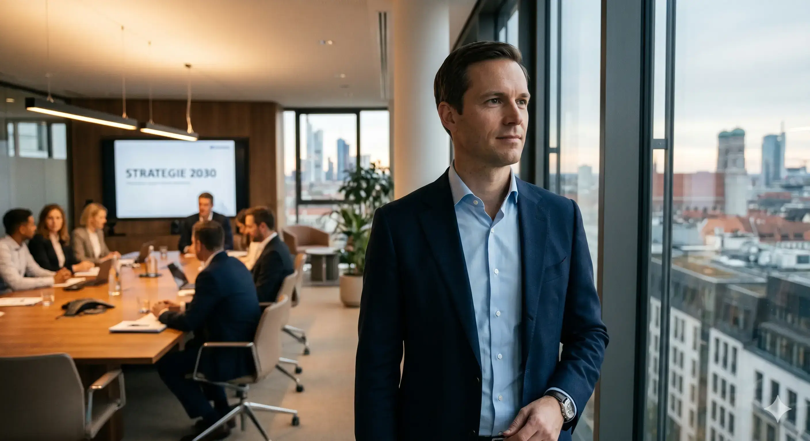

Today a company like BMW has 150,000 people to run its business. How many may BMW need in the near future?
If you were launching a new automotive company today, you would bring in the best AI and robotics experts to build a fully automated production line, supply chain, purchasing operation, and service network. Besides, you would let AI run the entire administration.
AI has advanced so much during the last years and months that all of this is already possible. And what holds true for automotive holds true for virtually every production and service company on the planet.
Let's face it: The more AI and robotics conquer our working lives, the less human workforce we will need. And the more autonomous agents we deploy — collaborating with other agents, spawning new agents, making decisions without human intervention — the fewer human teams we will see.
For many, this may sound scary, but every disruption represents an opportunity. We are convinced that the leadership of the future must evolve in two decisive steps.
Step one
We need transformational leaders who can navigate the turbulent transition ahead. Leaders who thrive in deep uncertainty. Self-aware, empathetic, exceptional communicators. Thinkers in scenarios. Redesigning work streams. Straightforward yet highly adaptive. Transformational speed will become the ultimate success factor.
Step two
In the new AI world, we will need leaders with an entirely new mindset and skillset. Can you imagine only 100 people running a company the size of BMW? These chosen few will operate in a universe of unprecedented challenges. Performing under intense public scrutiny. Carrying extreme responsibility. Visionary by nature. Orchestrating hierarchy-free collaboration with razor-sharp decision-making. Armed with outstanding networking skills and a vast intellectual horizon. They will need to master the interdependence of business, politics, and society like no generation before them.
How many of the people in your company may have such qualification? When the number of people you entrust with power shrinks dramatically, selecting and developing the right ones becomes mission-critical.
We at Munich Leadership Group have the skills to help you prepare your company and develop the leaders for this future. We co-develop new tools and processes built for this challenge. We work within an international network of leading institutes, business schools, and outstanding researchers to stay at the forefront — anticipating what comes next before it arrives.
Already today, we deploy advanced assessment tools and processes that are continuously evolving. We help our clients identify top talent early, streamline the leadership pipeline, build and facilitate high-performing teams, and audit the best candidates for the most critical positions. With our learning journeys, we take innovative approaches to accelerate qualification at every leadership level with an unwavering focus on future leadership success.
Get in touch. We would love to start a conversation about what we can do for you.
Contact us